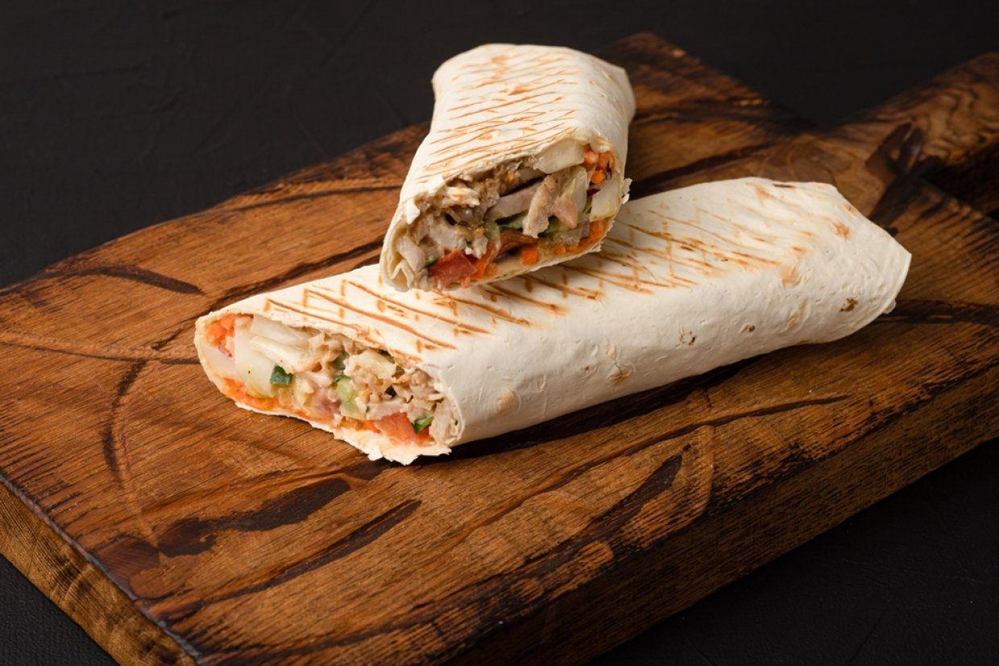
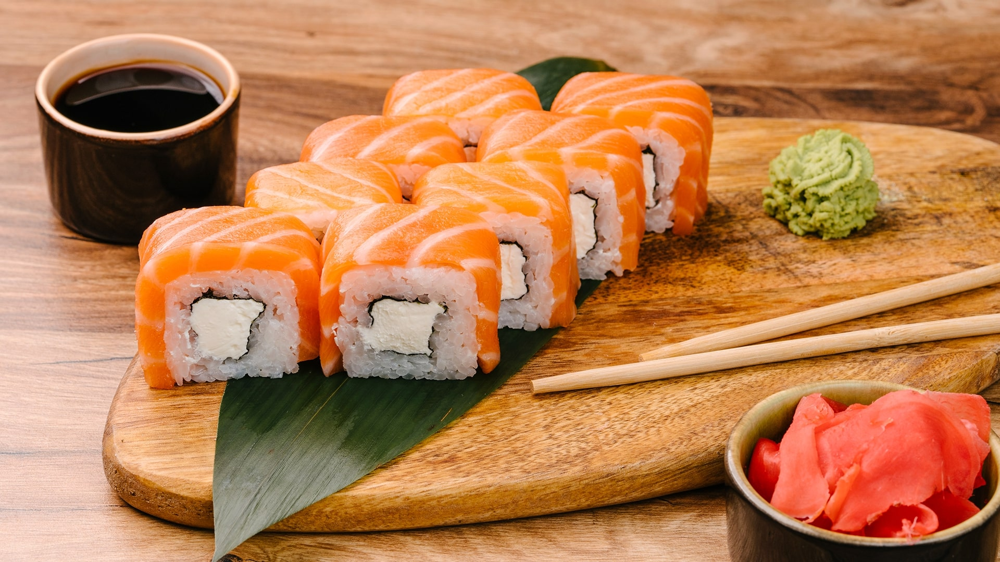
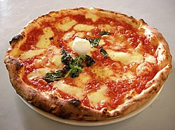

Улюблені страви

Шаурма́ — близькосхідна страва арабського походження з
піти або лавашу, який начинюють рубленим смаженим
м'ясом з додаванням приправ, соусів і салату зі свіжих
овочів. Вживається без використання столових приборів.

Суші — традиційна страва японської кухні зроблена на основі
рису, обробленого рисовим оцтом чи сіллю, та різноманітних
начинок чи нашарувань, серед яких переважають морські
продукти, але можуть входити м'ясо, овочі, водорості, гриби чи
яйця.

Піца — італійська національна страва, а саме, корж зазвичай
круглої форми, який покривається томатною пастою та сиром
і запікається. В залежності від рецепту додають також
яловичину, салямі, морепродукти, овочі, гриби, зелень та інші.
Піца поширилася всім світом і стала міжнародною стравою.